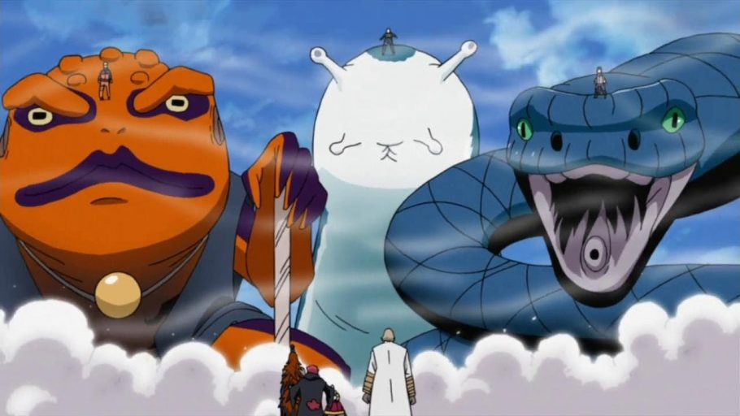

Jogão do Narutão
As vezes quando se está em apuros, uma ajudinha pode salvar sua vida. Que tal invocar um animal gigante para lhe ajudar? Escolha qual o melhor animal de invocação para o seu personagem.

Responder